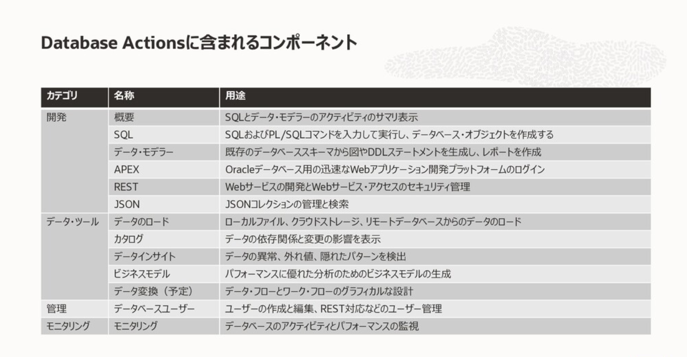
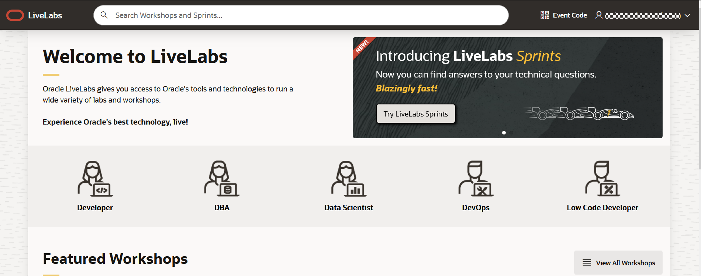

Database Actionsで利用できる機能はユーザ作成やデータ・ロードだけではありません。
データベース管理者はもとより、Autonomous Databaseのデータを開発者やデータ分析者がすぐに利用できる機能群が提供されています。
詳細はこちらの資料をご確認ください。

データ活用に関わる機能であるデータロード、カタログ、データインサイト、ビジネスモデルは、Oracle LiveLabs というサイトでイメージのようにシナリオに沿って実環境で体験することができます。この章ではその方法をご案内します。

1.Oracle LiveLabsとは?
Oracle LiveLabs とはOracle Cloud Infrastructure上でお試しいただける様々なワークショップをまとめたサイトです。150種類を超える数のワークショップが登録されています。

ワークショップの実行には、ご利用いただいているOracle Cloud環境およびAlways Free/トライアル環境をお使いいただけます。またワークショップによっては、Oracle LiveLabsで時間制限を設けた一時利用環境も提供しております。
(一時利用環境の利用手順についてはこちらが参考になります。)
なお、英語での提供ではありますが、ブラウザの翻訳機能をご利用いただくことで十分に進めることができます。このチュートリアルでは、日本語表示の場合はGoogle Chromeの翻訳機能を利用しています。
2.Database Actionsのワークショップ
Oracle LiveLabsのDatabase Actionsのワークショップはこちらです。
“Introduction to Autonomous Database Tools”

概要と開始手順
このワークショップでは、架空のオンライン映画ストリーミング会社”Oracle MovieStream”の社員になった想定で、顧客データ、視聴データをもとに顧客の傾向を分析していきます。
具体的には、分析するためのデータのロードとクレンジング、ビジネスに即した分析モデル作成とそこからの洞察を行います。それらすべてをDatabase Actionsで実施できるのです。
それでは、利用する環境に合わせて、以下のどちらかをクリックしてください。このチュートリアルではフリートライアルを想定してLaunch Free Trial Workshopを選択しています。

ワークショップのホーム画面が表示されました。

このDatabase Actionsのワークショップは大きく3つのラボで構成されています。
- ラボ1:ADBインスタンスのプロビジョニング
- ラボ2:データベースユーザーの作成
- ラボ3:自律型データベースツールの使用
既にADBインスタンス作成済みの場合はラボ2から進めてください。 ラボ3でOracle MovieStreamのシナリオに従ってデータの分析を行っていきます。実際にAutonomous DatabaseのデータをDatabase Actionsでどのように活用できるかをイメージいただけるはずです。
ブラウザ翻訳時の注意
ワークショップのホームは、ブラウザの翻訳機能で日本語化すると上の部分しか翻訳がおこわなわれません。その場合は、これらのワークショップの説明を新しいタブで開きます をクリックして新しいタブで画面を開いて翻訳してください。

3. その他のワークショップの紹介
Oracle LiveLabsのホーム画面の上部には検索ボックスがあります。
Autonomous Database と入力すると、Autonomous Database関連のワークショップが一覧で表示されます。それぞれのワークショップで完結してお試しいただけますので、ぜひアクセスいただき、気になるワークショップからお気軽にお試しください。

尚、Autonomous Databaseの機能に特化したものだけでなく、例えば、以下のようなAutonomous Databaseと他のサービスを組み合わせたワークショップやアプリケーション開発のワークショップもあります。
- Setting up a Departmental Data Warehouse with ADW and OAC Workshop
- すぐにデータ分析を始めたいんだけど、何から始めたら良いのか？という方にオススメ。
- Autonomous Databaseのセットアップと、Oracleが提供するデータ分析ツール（OAC: Oracle Analytics Cloud）の利用方法、接続方法について解説しています。
- Modern App Dev with Oracle REST Data Services Workshop
- Autonomous Databaseではデータを参照・更新するREST APIを簡単に作成、公開することができます。
- アプリケーションサーバを構成することなく、またGET/POSTメソッドで呼び出すだけなので、アプリケーション開発をより促進いただくことが可能です。
- このワークショップではREST APIの作成方法についてご紹介しています。
- Building Microservices with Oracle Converged Database
- アプリケーションをマイクロサービス・アーキテクチャで構成する場合、RDB、JSON、Text、Spatial、Graphといった様々な形式のデータを扱えるConverged Databaseのメリットや、一方でサービス毎に迅速にDBを用意できるといったアジリティが活かせます。
- このワークショップではマイクロサービスフレームワークであるHelidon、およびJavascriptを利用したサンプルアプリケーションをKubernetes上にセットアップしつつ、各種操作をご体験いただけます。
以上で、この章は終了です。
次の章にお進みください。